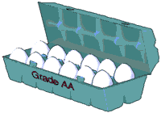

Protein needs while on dialysis
Your
new needs
People
who have been on a protein
restricted diet before starting dialysis
are often confused when they start
dialysis and are told that
they need to eat more protein. "How
can you get too much protein,
then not be able to get enough?" is
often the question. The difference
with dialysis is that you now have an
artificial kidney. This
"kidney" is not as efficient as your
original kidneys, but it
does remove much of the waste your
body produces. This allows
an increased protein intake without
the danger of a dangerous
buildup of its side products.
Additionally,
both advanced kidney disease and
dialysis cause a higher need
for protein intake. The kidney
disease causes certain changes
in your body's metabolism, breaking
down some of the protein you
eat before your body can use it.
Hemodialysis also causes some
protein loss in the small amounts of
blood that are lost each
treatment.
Intake
levels
As
mentioned above, the dialysis
treatment is not as efficient as
your original kidneys. This means
that there are still some restrictions
in terms of types of protein eaten, if
not the amounts. "High
Biologic Value" (HBV) protein
should still account for the
majority of protein eaten to help
further control the waste products.
Protein intake with greater than
60% HBV protein is a good
target.
For
those on dialysis, the
recommendation is 0.55 grams of dietary
protein per pound of body
weight. This is higher than the
0.36 grams recommended for the
average healthy individual and,
of course, higher than the 0.25 grams
per pound of body weight
used with the pre-dialysis
diet.
How
does this change the pre-dialysis diet
of our average sized man?
On the pre-dialysis diet he was
allowed 37-41 grams of protein
a day, now that he is on
hemodialysis, his needs are increased
to 82 grams per day.
|
Protein
Intake Goals
0.55
grams/lb
body weight
or
1 ounce of HBV food per 13
lbs.
Sample
Intakes
|
Weight
(lbs)
|
Protein
Intake
(grams)
|
|
100
|
55
|
|
125
|
69
|
|
150
|
82
|
|
175
|
96
|
|
200
|
110
|
1
ounce of HBV food =
7 grams of
protein.
[ For
example, 3 oz. of
turkey would provide 21
grams of
protein.
]
|
Therefore, the diet now is:
65% of protein from HBV sources:
82 X 65% = 53 grams or 8 ounces
of HBV foods (56 grams). 82 X
35% = 29 grams of protein from other
foods.
These 29 grams could come from 4
vegetable servings (4 grams),
8 grain servings (16 grams), two milk
servings (8 grams), and
4 fruit servings (0 grams) for a total
of 28 grams. (See the Arizona
Dietetic Project for serving
sizes.)
As
with the pre-dialysis diet, consistency
is the key to success.
A day or two of reduced intake,
maybe due to a cold, is okay as
long as intake goes back to usual
afterwards. If intake is too
low for extended amounts of time,
there is a danger of developing
a protein deficiency.
Checking
your protein status
Your
dietitian looks at your lab results to
help determine if your
intake is adequate. A main indicator
is albumin (there
are others). Albumin circulates in
your blood and is your body's
way of storing protein. A low
albumin is an indication of poor
protein status and your dietitian will
work with you to try to
increase your intake.
Since
albumin reflects protein storage, it
takes time to raise its levels.
Increased protein intake may not be
reflected in albumin levels
for 1-2 months. If poor appetite or a
dislike for HBV foods occurs,
speak with your dietitian about ways
to supplement your intake
Protein
and muscles

|
Albumin
Your
body's protein storage.
Blood levels should be 3.8
or higher. Corrective actions
should be taken with
levels less than
3.5.
|
Protein
is important for keeping your
muscles in good shape, but it
does not help develop muscle.
That's where exercise comes in.
To maintain your muscle mass it is
necessary to use those muscles
("use 'em or lose 'em").
Activity helps keep your
muscles strong. Do stretching
exercises and strength exercises
on a regular basis to keep up your
strength.
|  nephron.org
nephron.org